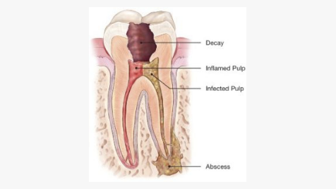

<!-- Page Content -->
<div class="content">

  

    

    <div class="container-fluit ">
        

        <section class="section  bg-default bgw p40">
            <div class="container text-center text-md-left">
                <div class="row align-items-center row-30 flex-md-row">
                    
                    <div class="col-lg-5 col-md-5">
                        <h2 class="p40 fw lio">Infobytes<br></h2>
        
                        <p class="fcs lio">Our teeth have such an important role to play in our lives. They help us chew and digest food, they help us to talk and
                        speak clearly and they also give our face its shape. A smile also has other day-to-day benefits. It can give us greater
                        confidence, as well as influence our social lives, careers and relationships.</p>
                    </div>

                    <div class="col-lg-6 col-md-7">
                        <div class="block-xs">
                        </div>
                    </div>
        
                </div>
            </div>
        </section>

        <!-- tab section -->

        <section class="bgw p40 pop">
            <div class="container">
                <div class="row ">
                <div class="col-sm-12 col-xs-12 col-md-12  text-center">
                    <h2 class="p40 fw">Dental Facts you should know</h2>
                </div>

                <div class="col-sm-12 col-xs-12 col-md-12 p40">
                    <ul class="infobytetab nav nav-tabs">
                        <li class="col-sm-3 bdd">
                            <a data-toggle="tab" class="active" href="#homecopy">
                            <div class="row rp">
                            <div class="col-sm-3">
                            </div>
                            <div class="col-sm-9 p9">Root Canal Treatment</div>
                            </div>
                        </a>
                    </li>

                    <li class="col-sm-3 bdd">
                        <a data-toggle="tab" href="#menu1">
                            <div class="row rp">
                                <div class="col-sm-3">
                                </div>
                                <div class="col-sm-9 p9">Dental Implants</div>
                            </div>
                        </a>
                    </li>

                    <li class="col-sm-3 bdd">
                        <a data-toggle="tab" href="#menu2">
                            <div class="row rp">
                                <div class="col-sm-3">
                                </div>
                                <div class="col-sm-9 p9">Dental Braces</div>
                            </div>
                        </a>
                    </li>

                    <li class="col-sm-3 bdd">
                        <a data-toggle="tab" href="#menu3">
                            <div class="row rp">
                                <div class="col-sm-3">
                                </div>
                                <div class="col-sm-9 p9">Crowns & Bridges</div>
                            </div>
                        </a>
                    </li>

                    </ul>
                </div>

                
                
            <!-- tab content -->
                <div class="infobytetabc tab-content p40">
                    
                    <div id="homecopy" class="tab-pane active">
                        <div class="container">
                            <div class="row">
                                <div class="col-sm-7 col-xs-6">
                                    <p>Root canal is a treatment to repair and save a severely damaged or infected tooth, instead of removing it.</p>
                                    
                                        <h5><b>STAGE 1:</b></h5>
                                        <p>Whenever there is any damage to the nerve of the tooth, due to tooth decay, repeated fillings, crack, fracture, or
                                        trauma- it may cause inflammation and damage to the pulp tissue- nerves and blood vessels. If left untreated, the
                                        bacteria’s may accumulate and cause pain and may further lead to swelling with respect to that tooth.</p>

                                        <h5><b>STAGE 2:</b></h5>
                                        <p>Local anesthesia is given to numb the tooth. An access hole will then be drilled into the tooth. The pulp, along with
                                        bacteria and related debris, is removed from the tooth.</p>

                                        <h5><b>STAGE 3:</b></h5>
                                        <p>The cleaning-out process is accomplished using root canal files. Saline or sodium hypochlorite is used periodically to
                                        flush away the debris. If root canal therapy is not completed on the same day, a temporary filling is placed in the
                                        exterior hole in the tooth to keep contaminants out between appointments.</p>

                                        <h5><b>STAGE 4:</b></h5>
                                        <p>The final step may involve further restoration of the tooth. Because a tooth that needs root canal therapy often is one that has a large filling or extensive decay or other weakness, a crown, crown and post, or other restoration often needs to be placed on the tooth to protect it, prevent it from breaking, and restore it to full function.</p>
                                        
                                    
                                </div>
                                <div class="col-sm-5 col-xs-6">
                                    
                                    <p class="itext"><i>Caption: Root canal is a treatment to repair and save a severely damaged or infected tooth, instead of removing it.</i></p>

                                    
                                    <p class="itext"><i>Caption: Root canal is a treatment to repair and save a severely damaged or infected tooth, instead of removing it.</i></p>
                                </div>
                            </div>
                        </div>
                     </div>

                     <!-- tab 2 -->
                    <div id="menu1" class="tab-pane fade">
                        <div class="container">
                            <div class="row">
                                <div class="col-sm-7 col-xs-6">
                                    <p>It is a surgical fixture that is placed into the jawbone and allowed to fuse with the bone over the span of a few months</p>
                                    
                                       
                                        <p>Dental implants are metal posts or frames that are surgically positioned into the jawbone beneath your gums. Once in
                                        place, they allow your dentist to mount replacement teeth onto them.</p>

                                       
                                        <p>A device called an abutment connects the artificial tooth to the dental implant. The crown is custom-made to fit the
                                        person’s mouth and match the color of their teeth. Crowns look, feel, and function like natural teeth.</p>

                                        
                                        <p>Implants have several advantages over dentures, which are removable artificial teeth. Implants: are more natural and
                                        comfortable, have a higher success rate, improve chewing function, lead to a lower risk of cavities developing in nearby
                                        teeth, lead to better maintenance of bone at the site of the lost tooth, cause decreased sensitivity in nearby teeth, do
                                        not need to be taken out and cleaned every night.</p>

                                        
                                        
                                    
                                </div>
                                <div class="col-sm-5 col-xs-6">
                                    
                                    <p class="itext"><i>Caption: Root canal is a treatment to repair and save a severely damaged or infected tooth, instead of removing it.</i></p>

                                   
                                </div>
                            </div>
                        </div>
                    </div>

                    <!-- tab 3 -->
                    <div id="menu2" class="tab-pane fade">
                        <div class="container">
                            <div class="row">
                                <div class="col-sm-7 col-xs-6">
                                    <p>Dental braces are appliances which are used to align or straighten the teeth and guide the teeth to the corrected
                                    position.</p>
                        
                        
                                    <p>Many people who need dental braces get them during their early teenage years, but adults also can benefit from wearing
                                    braces. The goal of dental braces is to properly align your teeth and jaws to produce an even bite and pleasing smile.</p>
                        
                        
                                    <p>Dental braces offer corrective treatment for overcrowded or crooked teeth, too much space between teeth, upper front
                                    teeth that overlap the lower teeth too much — either vertically (overbite) or horizontally (overjet), Upper front teeth
                                    that bite behind the lower ones (underbite), other jaw misalignment problems that cause an uneven bite.
                                    </p>
                        
                        
                                    <p>The braces may consist of bands, wires, and other fixed or removable corrective appliances. They are of different types-
                                    metal/traditional braces, ceramic braces, lingual braces, clear aligners.</p>

                                    <p>On average, once braces go on, they usually remain in place for 1 to 3 years. After braces come off, most people need to
                                    wear a retainer all the time for the first 6 months.</p>
                        
                        
                        
                        
                                </div>
                                <div class="col-sm-5 col-xs-6">
                                    
                                    <p class="itext"><i>Caption: Root canal is a treatment to repair and save a severely damaged or infected tooth, instead of removing it.</i></p>
                        
                        
                                </div>
                            </div>
                        </div>
                    </div>

                    <!-- tab 4 -->
                    <div id="menu3" class="tab-pane fade">
                    <div class="container">
                        <div class="row">
                            <div class="col-sm-7 col-xs-6">
                                <p>Crowns and bridges are fixed dental restorations which are used for restoration or replacement of missing
                                    natural teeth,
                                    respectively.</p>
                    
                    
                                <p>Dental crowns can have the following advantages:</p>
                                <p>It is the best protection that can be given to a threatened tooth. Teeth weakened by root canal treatment
                                    are also
                                    protected with crowns. Its made to restore the original shape of your tooth. Ceramic crowns are strong,
                                    and yet
                                    incredibly good looking. The color can be matched to the color of the adjacent teeth, restoring, or
                                    improving upon your
                                    original smile. Crowns last the longest of most dental restorations, most durable with a life of fifteen
                                    years or more.</p>
                    
                    
                                <p>Bridges have the following functions:</p>
                                <p>With the help of a bridge, the dental functionality is restored and helps to chew and eat efficiently. A
                                    bridge will
                                    also improve the clarity of speech that may have been lost due to absence of a natural tooth. The bridge
                                    structure
                                    distributes the chewing force equally to the supporting teeth, making for easier chewing. It also
                                    improves the smiles.
                                    Bridges also tend to last much longer than removable dentures.</p>
                    
                    
                            </div>
                            <div class="col-sm-5 col-xs-6">
                                
                                <p class="itext"><i>Caption: Root canal is a treatment to repair and save a severely damaged or infected
                                        tooth, instead of removing it.</i></p>
                    
                    
                            </div>
                        </div>
                    </div>
                    </div>
                </div>
            </div>
        </div>
        </section>


          <section class="section section-lg bg-image-21">
            <div class="container text-center">
                <div class="row justify-content-center">
                    <div class="col-xl-10 d-flex flex-column align-items-center">
                        <h2>Get a Free Consultation</h2>
                        <p class="gc">Let our team handle all your dental healthcare issues.
                        Call now to get a free consultation from our expert advisors on below numbers.</p>
                        
                        <a class="wow  text-xxl font-weight-bold" href="tel:#">
                            <h4> +91 9899799981  <span class="dd">|</span>  +91 9899799982</h4>
                          
                        </a>
                        <div class="row">
                            <a class="button button-primary button-shadow button-md button-xxl btn-grad  animate__delay-5s 5s" href="javascript:void(0);">Request a Callback</a>
                            <a class="button button-primary button-shadow button-md button-xxl btn-grad kkall animate__delay-5s 5s" routerLink="/online-consultation" [queryParams]="{limit: 10, skip: 0 }">Book An Appointment</a>
                        </div>
                    </div>
                </div>
            </div>
        </section>


    </div>

</div>
<!-- /Page Content -->